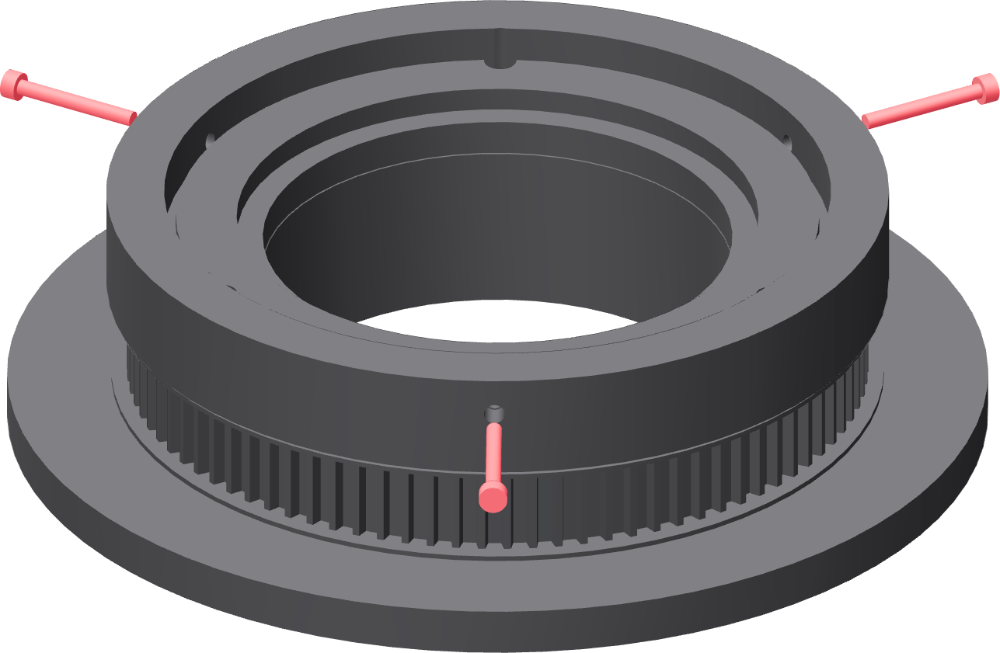

The three adjusters
Thread them in now and then back every tip fully clear, so the first tube lands on the pilot and the guide rather than on three screw points.

- Thread one M3 × 25 into each of the three radial inserts from the collar's outside face.
- Run each one in until you can see the tip appear in the guide bore, so you know the passage is clear and the screw is not cross-threaded.
- Back every tip fully clear of the OD guide.
- Leave them there. They are set against a tube, on page 43, and not before.
They locate; they do not clamp
The tube wall is 0.065 inch. These three screws take up clearance and give the indicator something to adjust. Light contact only. They are not there to force a slightly oval tube round, and force applied here becomes shape you cannot weld to.
Bring the screw to you
The adjusters ride on the turntable. When one is on the far side, jog or turn the table to bring it round to an open side of the fixture rather than reaching across the tube.